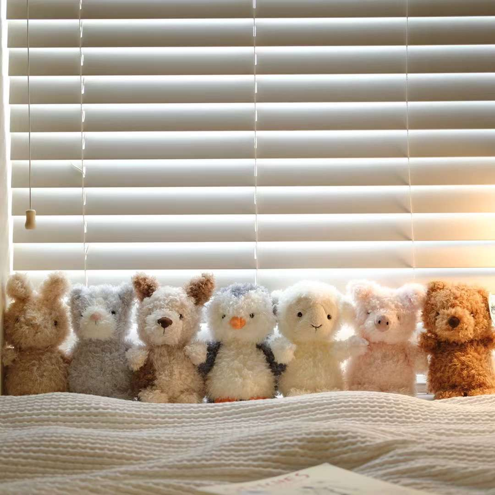
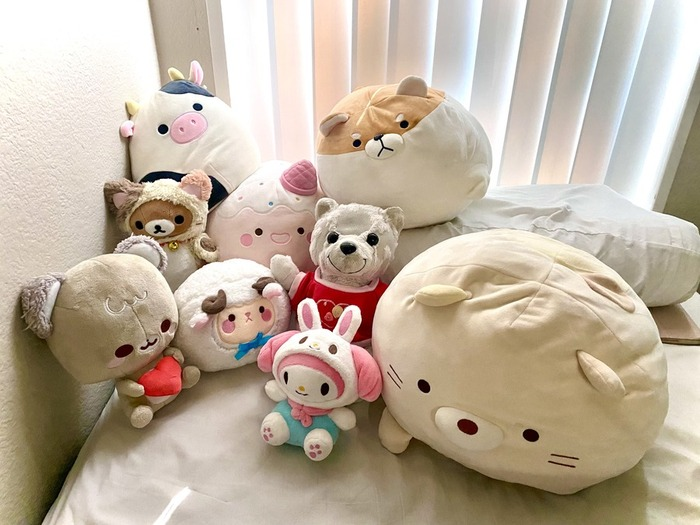

I found the article Game Design UX Best Practices quite intriguing, especially in understanding how UX operates within game design. Although I'm not particularly versed in game UX, my enthusiasm for gaming is strong, even though I don't often gravitate towards mobile games. It was interesting to see the author candidly discuss the concept of "dark UX." It seems that the distinction between designing for apps versus games lies in the functionality. App UX design is geared towards streamlining functionality to boost revenue generation, making it crucial for features to be as user-friendly as possible. However, in the realm of games, since revenue is primarily derived from ads and in-app purchases, designers might occasionally employ subtle tactics to encourage users to view ads or make purchases. Learning about these strategies, like using a slider designed to make content only partially visible, thereby signaling to users that there is more to see, is quite enlightening.
Visual Thinking Analysis

Mengqi Cao, 2022
These fluffy toys in the image are from my collection of Jellycat's "little" series. Each of them comes with a name tag displaying their names and characteristics. I purchased them during my second year as a biochem engineering major when I was under a lot of stress due to heavy coursework and exams. To alleviate my stress, I implemented a self-care routine. After each test, I rewarded myself with one of these toys, placing them on my bed. Their adorable presence always brought me comfort and relaxation.
My topic is my intriguing collection, and the project reminded me of my Jellycat collection. They are all adorable, part of the same series, and, importantly, they hold sentimental value for me as they provided comfort during difficult times in my old apartment.
I have loved collecting cute stuff since high school, but I sometimes felt guilty about spending a lot of money on them. Then I thought of a good way to motivate myself and give meaning to these collections: I would buy cute little items as a reward when I achieved something meaningful in my academics. They also helped me relieve a lot of stress before taking an exam.

Kristin ly, 2023
This image shows 9 cute plush toys on a bed of different sizes and colors. It's interesting that, despite their varying shapes and colors, you can tell that some of them might belong to the same brand just by examining their textures. For instance, the white cat and the dog share a sphere-like appearance, with similar eye sizes and stitching techniques. Additionally, the rabbit and the bear both wear similar types of hats. I can deduce that the owner holds these toys dear, as they are all displayed on the bed. It's possible that the owner even cuddles with some of them to drift off to sleep, given the presence of some wrinkles. It's evident that these toys are cute, with their various shapes and colors, and the owner likes them all enough to place them on the bed. The mystery lies in my inability to discern how each toy is connected to the owner, when they were purchased, and what transpired during that time.
Visual Thinking Strategies Research
The article Search The Learning Networ SEARCH 10 Intriguing Photographs to Teach Close Reading and Visual Thinking Skills provides numerous interesting images rich with details. A mere glance at them won't suffice to grasp the full story; however, opening the high-resolution image and taking the time to slowly observe allows me to imagine the potential stories unfolding. I related with the article that this is an effective method for language learning. As an international student who has been studying English since elementary school, I recall how our textbooks were filled with contextual examples. For instance, they would depict two characters seated inside a restaurant, and we would practice describing the scene in English. This approach not only honed our speaking skills but also trained us to pay attention to detail.
A website I found to be both interactive and entertaining is Root-food.com. It seamlessly transitions between images and text with a horizontal mouse swipe, transforming each healthy recipe into a captivating narrative. Additionally, it boasts a diverse layout of images, including animated special effects for both text and images. I believe this site is a valuable resource for gaining inspiration.
Overlays Design Pattern Research
The article Best Practices for Modals / Overlays / Dialog Windows offers practical insights into dealing with overlays, including guidelines on when to use and when not to use them. It's incredibly useful, especially for someone like me who frequently incorporates overlays into app design. The Overlays is clear, straightforward, and efficient. But after reading the article, I recognized that overlays aren't always the best choice and can sometimes exacerbate issues.
One thing stood out to me is the anatomy of a modal window, it clearly indicates what should we include in an overlay. I think the most important things is the close button. The overlays without a close button can be seen everywhere and drives people crazy, especially in the ads and discount information in a shopping website. To retain the viewer's attention for longer, some designs make the close icon incredibly small, difficult to click, or even lock it with a countdown timer. Whenever I come across such an overlay, my immediate reaction is to exit the site. This reaction underscores the opposite of the intended effect. It reiterates that overlays should be used to interrupt a user's current task only when it's essential to draw their full attention to something more significant.
Design Best Practices
The article Best practices for form designoffers many valuable guidelines for designers crafting forms. It emphasizes creating minimalist and user-friendly designs that encourage users to engage further. For instance, clearly indicating the form's steps can significantly boost user completion rates.
Designing forms for mobile apps can be challenging due to space constraints. I frequently ponder the appropriate elements to use for specific properties. I've often questioned whether to use a stepper or an input field when designing a feature for number selection. Reading articles like this is enlightening, as they address nuanced issues I hadn't previously considered. The examples within the article further broaden my understanding, especially on designing user-friendly feedback.
I think Duolingoexemplifies best practices of forms design, their sign-up process is super smooth, with well-organized input fields and intuitive error handling and intuative illustration design.